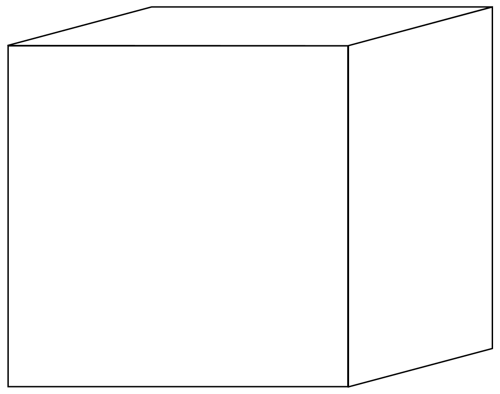

Thinking about spaghetti that boils eternally but is never done is a sad, sad thing. Now I regret, a little, that I didn’t tell the girl anything. Perhaps I should have. I mean, her ex-boyfriend wasn’t much to start with—an empty shell of a guy with artistic pretensions, a great talker whom nobody trusted. She sounded as if she really were strapped for money, and, no matter what the situation, you’ve got to pay back what you borrow. Sometimes I wonder what happened to the girl—the thought usually pops into my mind when I’m facing a steaming-hot plate of spaghetti. After she hung up the phone, did she disappear forever, sucked into the 4:30 p.m. shadows? Was I partly to blame? I want you to understand my position, though. At the time, I didn’t want to get involved with anyone. That’s why I kept on cooking spaghetti, all by myself. In that huge pot, big enough to hold a German shepherd.
>